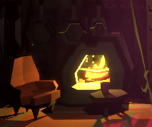

Mrs. Crow

Description
A retro point and click adventure with a cozy feel. Help Mrs. crow find out what is going and heal those along the way. Fyi. Ran into some mischeduling and we were unable to finish the final area :(
Screenshots & Images

Play The Game
Feedback & Comments
"Volume on the first screen!! GG on that move. Great sound design, effects and music. Adds to the creepy feel of the game. The train jiggly effect feels very good for what you were aiming with a dark but cute feel. Controls wouldn't work for me on Firefox. Chrome wouldn't load the game properly. I could click things, but couldn't select the options I saw. Really love the character model and world for the game. Great job implementing your vision and having a unique theme interpretation." - Anonymous Judge